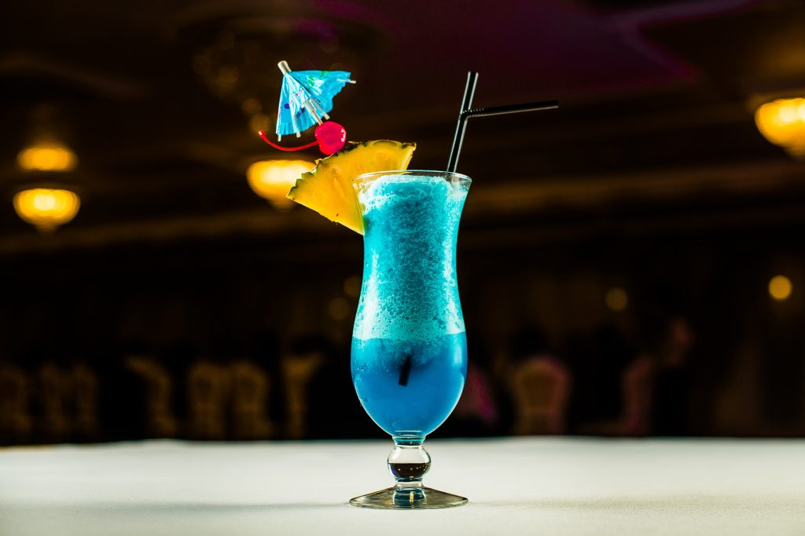

Manhattan

Mysterious blue, a Zodiac clue – a cocktail twist in a killer's view.
In "Zodiac," the "Aqua Velva," mistakenly called the "Zodiac" cocktail,
adds intrigue to the narrative. Comprising blue curaçao, vodka, and other
mixers, the cocktail's distinctive blue color symbolically enhances the
mysterious atmosphere of the infamous Zodiac Killer case. This choice
becomes a subtle yet memorable detail, showcasing the film's meticulous
portrayal of real-life events and characters in the investigation.
Ingredients
- Vodka 3 cl
- Gin 3 cl
- Blue Curaçao 2 cl
- squeezed lemon juice 1 cl
Steps
- In a shaker half-filled with ice cubes, pour 3 cl Vodka
- 2 cl blue curaçao, 3 cl Gin and 1 cl squeezed lemon juice.
- Stir vigorously for fifteen seconds.
-
Hold back the ice cubes with a cocktail strainer and pour your Aqua
Velva into a tulip-shaped glass.
- Enjoy your cocktail chilled!